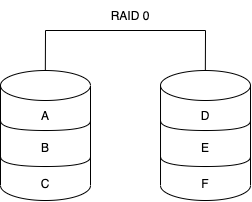
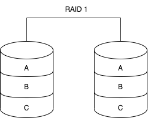
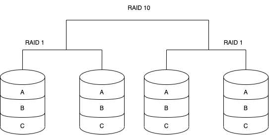
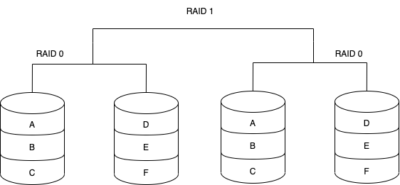
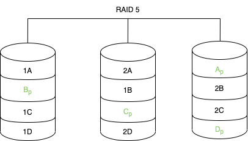

Redundant Array of Independent Disks (RAID)
Ein RAID-System dient zur Organisation mehrerer physischer Massenspeicher zu einem logischen Laufwerk, das eine höhere Ausfallsicherheit oder einen größeren Datendurchsatz erlaubt als ein einzelnes physisches Speichermedium.
Allgemeines
- Logisches Laufwerk wird als Logical Unit Number (
LUN) bezeichnet
Verschiedene RAID Arten
RAID 0 - Festplatten Striping

- Alle Daten werden einfach auf die verschiedenen Festplatten verteilt
- Nur geeignet für unkritische Anwendungen
- Vorteile
- Hat eine hohe Leistung, da sich die Last auf die verschiedenen Festplatten verteilt
- Niedrigste Kosten
- Einfach implementierbar
- Nachteile
- Verwendet keine Parität1. Somit ist keine Datenredundanz oder Fehlertoleranz verfügbar.
RAID 1 - Disk Mirroring

- Für dieses RAID werden mindestens zwei Festplatten benötigt
- Alle Daten werden immer auf zwei seperate physische Festplatten geschrieben. Somit ist eine Festplatte immer das Spiegelbild der anderen Festplatte.
- Geeignet für kritische Anwendungen
| Vorteile | Nachteile |
|---|---|
| Bietet sofortiges Failover, da sofort auf das Abbild geschwenkt werden kann | Schreibgeschwindigkeiten sind langsamer, da die Daten immer auf zwei Festplatten geschrieben werden müssen |
| Es wird immer der doppelte Speicherplatz benötigt |
RAID 1+0 / RAID 10 - Plattenspiegelung und Striping

- Für dieses RAID werden mindestens 4 Festplatten benötigt
- Daten werden zuerst gespiegelt und dann gestriped
- Geeignet für Dienste, die eine geringe Ausfallsicherheit benötigen
| Vorteile | Nachteile |
|---|---|
Profitiert von der Leistung von RAID 0, da mehrere Schreibköpfe gleichzeitig auf Teile der Daten zugreifen können |
Wenn ein Laufwerk verloren geht, muss auf das andere Stripe-Set zugegriffen werden |
Durch das RAID 1 sind die Daten jedoch auch geschützt |
Die Speicherkapazität wird auch hier verdoppelt. D.h. diese Variante ist teurer als andere Varianten |
RAID 0+1 / RAID 01 - Striping und Plattenspiegelung

RAID 2 - Striping und Hamming-Code-Parität
- Die Hardware bekommt nicht mit, wenn eine Festplatte defekt ist
- Die verlorenen Daten werden durch den RAID-Controller wiederhergestellt
- Wird nicht mehr so eingesetzt, da Hamming-Codes bereits in `Error Correction Codes von Festplatten verwendet wird
| Vorteile | Nachteile |
|---|---|
| Datensicherheit | Wesentlich komplexer |
RAID 3 - Paritätsfestplatte
- Für dieses RAID werden mindestens drei Festplatten benötigt
- Speichert die Paritätsinformationen auf einer seperaten Festplatte, getrennt von den Daten
- Eignet sich gut für lange, sequentielle Datenübertragungen
| Vorteile | Nachteile |
|---|---|
| hoher Durchsatz: gut für große Datenmengen | zusätzliches Laufwerk für Parität: Leistung schlecht, wenn viele kleine Datenanforderungen vorliegen |
RAID 4 - Paritätsfestplatte und Block-Level-Striping
- Wird kaum mehr verwendet
RAID 5 - Festplatten Striping mit Parität

- Für dieses RAID werden mindestens drei Festplatten benötigt
- Daten werden wie bei RAID 0 verteilt
- Die Paritätsinformationen werden wie die Daten auch auf den Festplatten verteilt
- Gängigste RAID-Methode
| Vorteile | Nachteile |
|---|---|
| Guter Durchsatz und Leistung entsprechend zu RAID 0 | Schreibleistung ist aufgrund der Paritätsdatenberechnungen langsamer als die Leseleistung |
| Da Paritätsdaten query über alle Festplatten gespeichert sind, ist dieser Typ einer der sichersten RAID-Typen | Längere Wiederherstellungszeiten |
| Festplatten können im laufenden Betrieb ausgetauscht werden. Dadurch werden Ausfallzeiten minimiert | Möglicher Datenverlust, wenn ein zweites Laufwerk ausfällt |
| Anspruchsvollerer RAID-Controller notwendig |
-
Technik die prüft, ob Daten verloren gegangen sind oder überschrieben wurden, wenn sie von einem Speicherort zum Anderen bewegt werden oder zwischen Computern übertragen werden. ↩